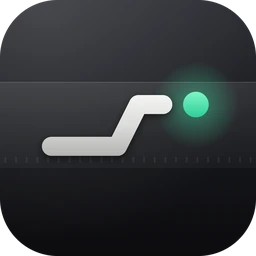
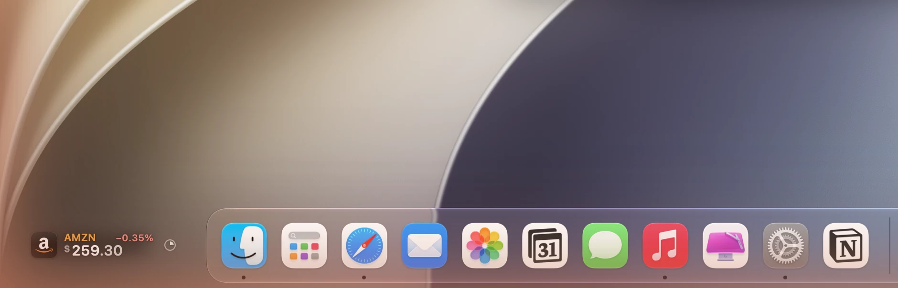
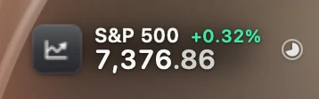
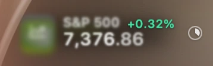
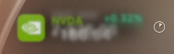
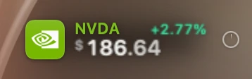
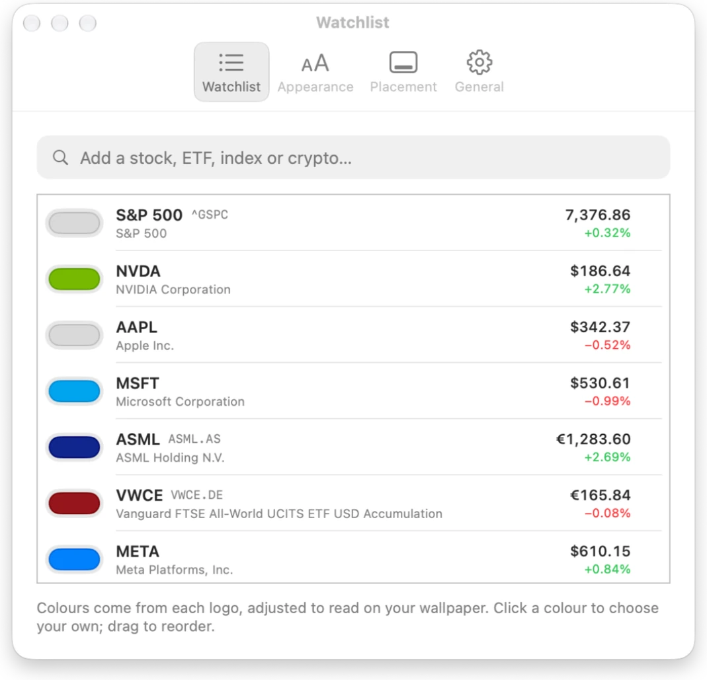
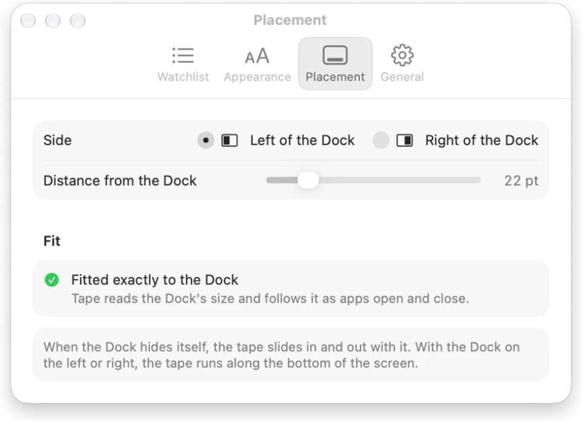

Tape
One stock at a time, beside the Dock.
Homebrew:

- Exactly beside the Dock. Tape measures the Dock and sits in the middle of the corner it leaves empty. It follows as apps open and close.
- One at a time. A logo tile, the price, the move in mint or coral and the day so far. Then the next one comes into focus, column by column.
- Names in their own colour. NVIDIA green, Vanguard red: each colour comes from the logo, adjusted to read on the wallpaper.
- Fits any Dock. Wide on a big screen; on a laptop with a long Dock it turns compact, then stacks ticker, price and move.






Built with AppKit, SwiftUI, Core Animation and the Accessibility API, with quotes from Yahoo Finance. Five more looks (Liquid, LED, Paper, Aura and Classic) are one click away in Settings.
Next: Needle